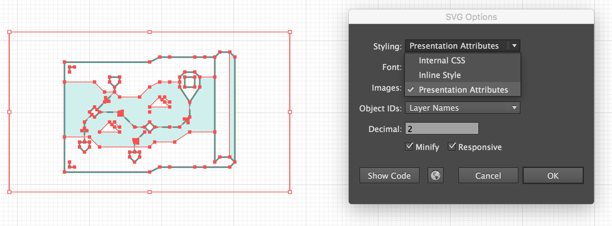
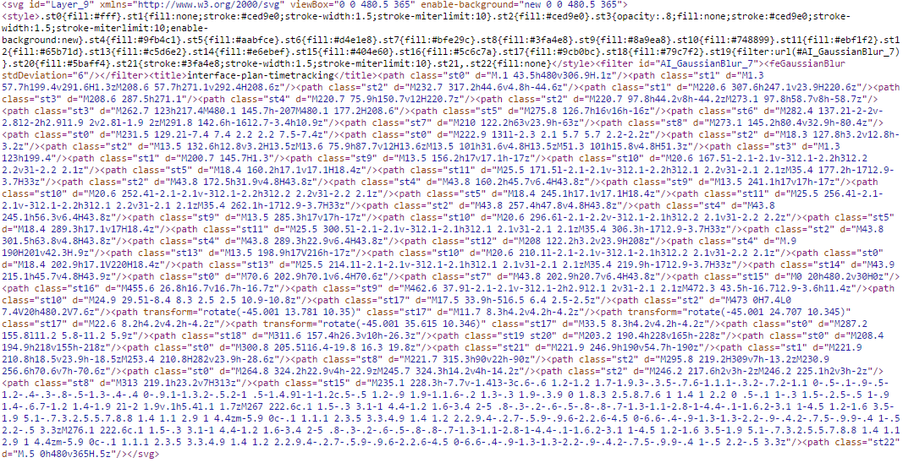
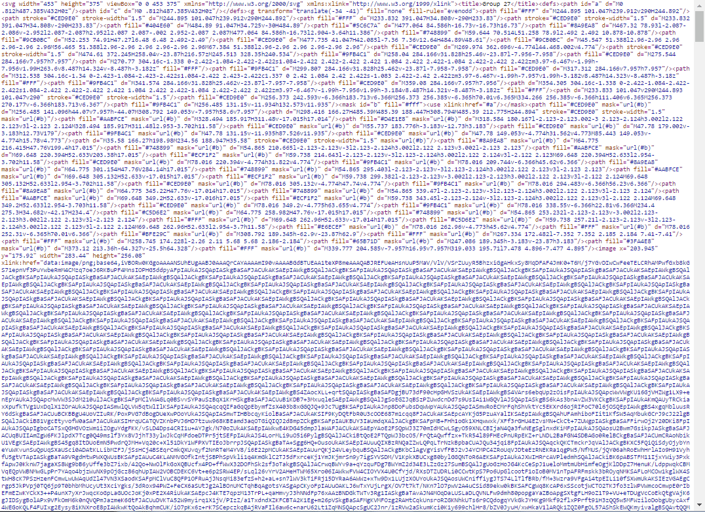

Дмитрий Рычков, Wrike
Дмитрий Рычков
24/05/2016
| JPEG | 73.5% |
| PNG | 71.5% |
| GIF | 40.4% |
| SVG | 2.0% |
| BMP | 0.3% |
| ICO | 0.2% |
|
3+
9+
|
Resolution, px 640 × 1136
Viewport, dp 320 × 568
| 1 | 2 |
| 3 | 4 |
Pixel ratio: 1
| 1 | 2 | 1 | 2 |
| 1 | 2 | 1 | 2 |
| 1 | 2 | 1 | 2 |
| 1 | 2 | 1 | 2 |
Pixel ratio: 2
@media (-webkit-min-device-pixel-ratio: 2),( min--moz-device-pixel-ratio: 2),( -o-min-device-pixel-ratio: 2/1),( min-device-pixel-ratio: 2),( min-resolution: 192dpi),( min-resolution: 2dppx) {.element { // styles... }}
Resolution, px 1080 × 1920 (Full HD)
Viewport, dp 360 × 640
| 1 | 2 |
| 3 | 4 |
Pixel ratio: 1
| 1 | 2 | 1 | 2 | 1 | 2 |
| 1 | 2 | 1 | 2 | 1 | 2 |
| 1 | 2 | 1 | 2 | 1 | 2 |
| 1 | 2 | 1 | 2 | 1 | 2 |
| 1 | 2 | 1 | 2 | 1 | 2 |
| 1 | 2 | 1 | 2 | 1 | 2 |
Pixel ratio: 3
Resolution, px 1440 × 2560 (Quad HD)
Viewport, dp 360 × 640
| 1 | 2 |
| 3 | 4 |
Pixel ratio: 1
| 1 | 2 | 1 | 2 | 1 | 2 | 1 | 2 |
| 1 | 2 | 1 | 2 | 1 | 2 | 1 | 2 |
| 1 | 2 | 1 | 2 | 1 | 2 | 1 | 2 |
| 1 | 2 | 1 | 2 | 1 | 2 | 1 | 2 |
| 1 | 2 | 1 | 2 | 1 | 2 | 1 | 2 |
| 1 | 2 | 1 | 2 | 1 | 2 | 1 | 2 |
| 1 | 2 | 1 | 2 | 1 | 2 | 1 | 2 |
| 1 | 2 | 1 | 2 | 1 | 2 | 1 | 2 |
Pixel ratio: 4
.arrow {display: inline-block;border-width: 100px;border-style: solid;border-color: transparent;border-left-color: #8bc53f;}
<svg width="100" height="200"viewBox="0 0 100 200"><path d="M0,0 L100,100 L0,200"fill="none"stroke="#8bc53f" stroke-width="5"/></svg>
<path d="M0,0 // Move to x=0 y=0L100,100 // Line to x=100 y=100L0,200 // Line to x=0 y=200"/>

good.svg ~5.6 kb

bad.svg ~220 kb

| CSS | JS | Анимация | |
|---|---|---|---|
| <img> | - | - | - |
| background-image | - | - | - |
| <object> | Через внешний файл | Да | Да |
| inline | Да | Да | Да |
Используйте для обычных встроенных изображений
Только если нужен полный контроль
Очень маленькие иконки можно кодировать в base64 и вставлять в CSS-файл
Для масштабирования, поворота, наклона и т.п.
Добавляйте <title> и <desc> для встроенных изображений
Для <img> прописывайте alt и title
Генератор спрайтов SVG Sprite
<view><symbol> или <defs>var config = { mode: {css: {dest: '.',sprite: './sprite.svg',render: {less: {dest: '.'}}}}};
gulp.src('./*.svg').pipe( svgSprite(config) ).pipe( gulp.dest('.') );
На выходе:
sprite.less - данные спрайта
sprite.svg - cпрайт
<i class="icon icon-kitty"></span>
.icon { background: url(sprite.svg) no-repeat;.icon-kitty {width: 50px;height: 50px;background-size: 50px 50px;background-position: 0 0;}
<img src="./sprite.svg#svgView(viewBox(0, 0, 50, 50))">
<img src="./sprite.svg#icon-kitty">
.icon-kitty { background: url(sprite.svg#icon-kitty) no-repeat;}Картинка позиционируется под область просмотра
<view id="icon-kitty" viewBox="0 0 50 50" /><svg width="50" height="50" x="0" y="0"><path ... /></svg>
Можно разместить SVG прямо в HTML, а можно указать ссылку на внешний файл
<svg><use xlink:href="sprite.symbol.svg#icon-kitty"></use></svg>
Код каждой иконки внутри одного элемента <symbol>
<symbol viewBox="0 0 50 50" id="icon-kitty"><path ... /></symbol>
Невозможно загрузить спрайт с другого домена через <use>
<svg><use xlink:href="//same-domain.com/sprite.svg"/></svg>
Очень хорошая, но нужен полифилл для внешних SVG
Медиа-выражения работают прямо внутри svg-файла, и зависят не от вьюпорта документа, а от текущего размера SVG
Наилучшая кроссбраузерность достигается подключением через <object> или inline
<metadata>
Слайды: corsairdnb.github.io/svg-slides
VK: vk.com/corsairdnb
Wrike: wrike.com
Habrahabr: habrahabr.ru/company/wrike
Blog: wrike.com/ru/blog
Youtube: Wrike Tech Club
Shower: shwr.me